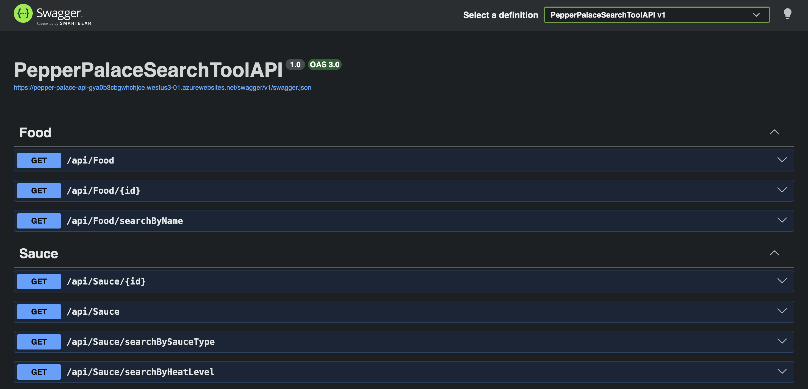

Pepper Palace Search Tool
A Deep Dive
A REST API I built to solve a real problem at my job, backed by a MySQL database and deployed to the cloud.

Project Overview
Pepper Palace Search Tool is a REST API I built to solve a real problem from my job. I work as a salesperson at Pepper Palace, and I kept struggling to remember which foods paired well with which hot sauces. So I built a tool to look it up, one that could help me sell better and double as a training tool for new employees. It's backed by a real MySQL database and deployed live to the cloud.
Key Features
- A full REST API for sauces, foods, and their pairings
- Backed by a MySQL database using Entity Framework Core
- A layered design (controllers, services, DTOs) with dependency injection
- A many-to-many pairing system built on a junction table
- Search endpoints that filter by sauce type, heat level, and name
- Deployed to Azure, with a Swagger page you can try in the browser
Development Details
- Framework: ASP.NET Core (.NET)
- Language: C#
- Database: MySQL with Entity Framework Core
- Hosting: Azure App Service
- Status: In Progress (backend built, front end in the works)
Download & Source
What I worked on
I built this on my own to solve a real problem at work: quickly finding which foods go with which sauces. To make it something that could actually be used, not just a demo, I built it like a real backend service. What I built:
- A layered API where controllers handle the requests, services handle the logic, and DTOs shape the responses, wired together with dependency injection
- A MySQL database with a many-to-many relationship, so sauces and foods pair with each other through a junction table
- LINQ queries that join the sauce, food, and pairing tables and group them, so each sauce comes back with all the foods it goes with
- Search endpoints that filter by sauce type, heat level, and name
- The whole thing deployed to Azure with a Swagger page, so anyone can actually use it, not just me on my machine
Development Insights
This is the project I'm proudest of, because I didn't build it for a class, I built it to solve an actual problem I was having at my job. I wanted a fast way to match foods to sauces so I could sell better and help train new hires. This is where I really started learning backend development and databases, designing the database, using an ORM, structuring the code in clean layers, and deploying it to the cloud. Right now it's a work in progress: the backend and database are built, and I'm teaching myself front-end development so I can build a proper interface for it. It's the project that got me into full-stack, and I'm still building on it as I learn.
Note: this is a personal passion project I made to help increase sales output and learn full-stack development. It is not an official tool created by Pepper Palace.